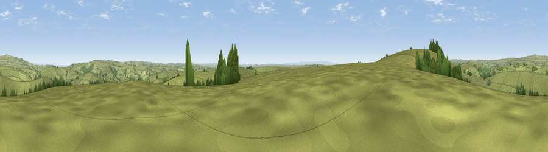

Viewpoint near Winsford
#12275 in England · top 24% of its area beats it · near WinsfordWhere it is
The exact computed spot (SS 88575 34175). Click the marker for map links.
The view, rendered

A 360° render of this exact spot computed from the terrain model, tree cover and land cover — summer colours, afternoon light, calibrated against photographs of famous viewpoints. Real trees, hedges and buildings will differ in detail.
The panorama
Grey silhouette: terrain skyline in each direction (720 bearings, Earth curvature and refraction included). Dashed green: skyline with trees (+15 m) and buildings (+8 m) as obstacles. Blue strip: how far the ground is visible on each bearing.
Where the view opens
Wedge length = distance to the farthest visible ground on that bearing (vegetation-aware). Rings at 10, 25 and 50 km.
What fills the view
91% grassland · 7% woodland · 1% cropland
Angular shares of the visible panorama (visual magnitude), not map area. Landscape diversity 0.15 (0–1 Shannon).
Key numbers
More beautiful places nearby
The staircase of upgrades: each row has a higher view potential than everything closer. Driving times are estimates from straight-line distance, calibrated against real road routing — check an actual route before setting out.
| Place | Direction | Drive | Score |
|---|---|---|---|
| Winsford Hill | W · 1 km | ~2 min | 66.0 |
| Viewpoint near Wheddon Cross | NE · 5 km | ~12 min | 66.8 |
| Viewpoint near Luxborough | ENE · 7 km | ~15 min | 73.5 |
| Viewpoint near Luccombe | N · 7 km | ~15 min | 84.5 |
| Viewpoint near Luccombe | NNE · 9 km | ~18 min | 84.6 |
| Viewpoint near Luxborough | ENE · 12 km | ~22 min | 85.5 |
| Viewpoint near Porlock | NNW · 13 km | ~23 min | 86.3 |
| Selworthy Beacon | NNE · 14 km | ~26 min | 88.7 |
51.09602, -3.59260 · source: screening · position refined by local search. Computed location — check access rights before visiting.